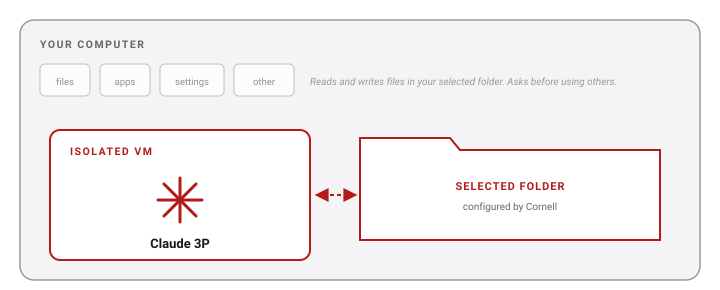

Set Stage
Who you are, what you’re working on, who the output is for. The context Claude needs.

Module 1 · Claude Training at Cornell
What Claude is, where it lives at Cornell, and your first two real exercises — eCFR and contract review.
The goal
Not replace your judgment. Not write the parts that need you. The parts that take time and don’t take critical thought.
Today is about getting Claude installed, knowing what it’s safe to give it, and running two real tasks before you leave.
What is Claude 3P
Claude Desktop, with “third-party (3P) inference” feature set to use models in our secure AI infrastructure:

Live tool status: AI Innovation Hub.
Data rules
If you can put it in Sandbox AI, you can put it in Claude 3P. Same gateway, same contracted infrastructure.
How AI works
An LLM builds its answer one token at a time, picking among plausible next words by probability. There is no fixed right answer — only what’s most likely given what came before.
That’s why two runs of the same prompt can come back worded differently, and occasionally with different substance. It’s a feature, not a bug — but it’s why you read every answer critically and spot-check the things that matter.
Adapted from AI4RA — REACH Workshop 2026.
The 3-part prompt
A simple frame that lifts almost any prompt. Every great prompt has these three parts — sometimes implicitly, sometimes in any order.
Who you are, what you’re working on, who the output is for. The context Claude needs.
What you want Claude to do, broken into specifics. Numbered lists for compound work.
Format, length, sources, tone, constraints. The “how,” not the “what.”
Adapted from Anthropic’s AI Fluency materials.
The 3-part prompt · Weak
Claude will produce something, but it’ll be generic and you’ll spend the next hour re-prompting.
The 3-part prompt · Strong
Stage, Task, and Rules don’t have to appear in order — they just have to all be present.
The interface
Live walkthrough during the workshop. Screenshots and a UI tour will live on this slide after.
Pick a model
Three Claude models in the picker at the bottom of the chat. Start with Sonnet for almost any task.
Quick lookups, classification, short rewrites. Fastest and lowest cost.
Everyday work — drafting, summarizing, code, analysis. The right starting point for almost any task.
Long documents, multi-step reasoning, code that has to work. Slower and more expensive — reach for it when Sonnet falls short.
$ / $$ / $$$ is relative cost — Opus is roughly 5–15× Sonnet on a per-task basis. Your unit is billed for usage through the Cornell AI Platform.
Wow moments
Drafted from the program description + original abstract in under 2 minutes.
One paragraph for a PI, plus a bulleted action list. From 45 minutes to 5.
Flagged clauses, suggested redlines, plain-English summary. Hand to legal.
Placeholder examples — replace with real Cornell stories as the cohort runs.
Today’s exercises
Use the eCFR skill to pull current text from 2 CFR 200, then summarize it for a non-expert PI.
Walk a vendor SaaS contract against Cornell positions and produce a plain-English risk summary.
Copy-pasteable prompts on the module page.
Before next week
Anthropic’s free course. Frames everything we’ll discuss in Module 2.
Your workplace, your values, and “If AI could help me ___, I would spend more time ___.”
Links: this site · AI Innovation Hub · AI4RA · Teams cohort channel · ai-support@cornell.edu
Speaker notes